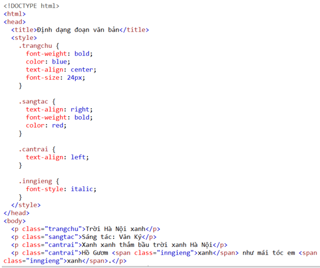

a) Times New Roman
b) Courier
c) Abadi
d) Bradley Hand ITC
e) Berlin Sans FB
f) ALGERIAN
g) Consolas
h) Caseadia
Các thuộc tính CSS liên quan đến định dạng đoạn văn bản: Căn đoạn văn bản, màu chữ, kiểu chữ. Cụ thể:
- font-variant: Thuộc tính này được sử dụng để xác định kiểu chữ viết hoa của văn bản. Giá trị phổ biến của thuộc tính này bao gồm: + normal: Chữ in thường (mặc định). + small-caps: Chữ viết hoa nhỏ. - letter-spacing: Thuộc tính này xác định khoảng cách giữa các kí tự trong một đoạn văn bản. Giá trị của thuộc tính này có thể là số âm (kích thước kí tự thu nhỏ lại) hoặc số dương (kích thước kí tự mở rộng ra). Ví dụ: letter-spacing: 2px. - word-spacing: Thuộc tính này xác định khoảng cách giữa các từ trong một đoạn văn bản. Giá trị của thuộc tính này cũng có thể là số âm hoặc số dương. Ví dụ: word-spacing: 5px. - text-shadow: Thuộc tính này cho phép bạn thêm hiệu ứng bóng cho văn bản. Bạn có thể xác định màu sắc của bóng, độ mờ, và vị trí của bóng. Ví dụ: text-shadow: 2px 2px 4px rgba(0, 0, 0, 0.5).